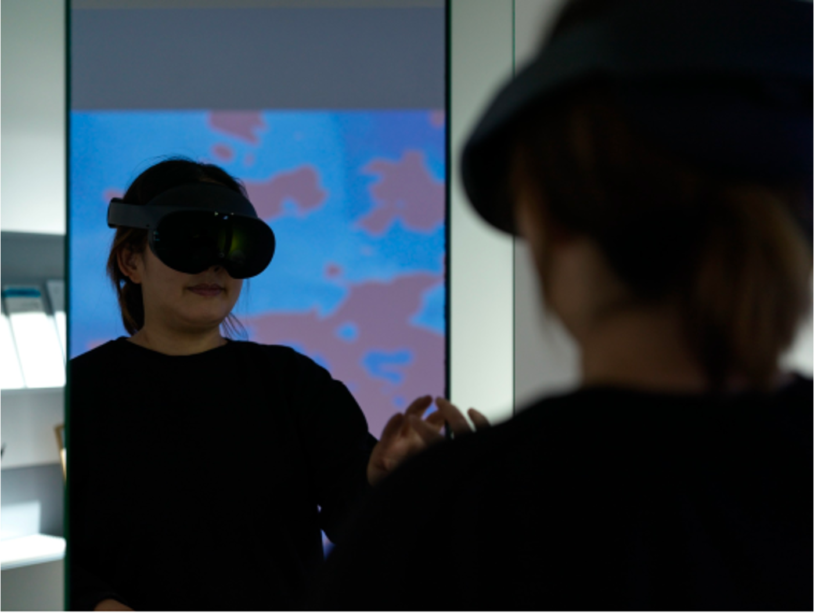
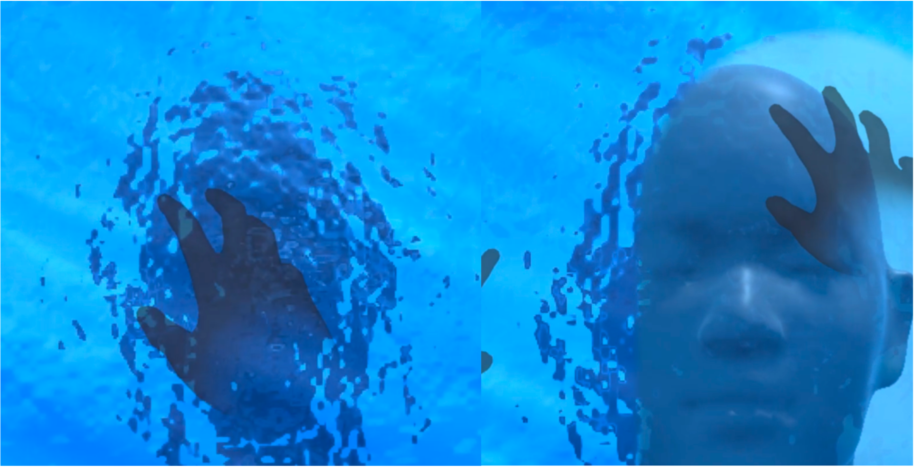
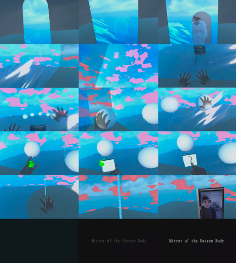
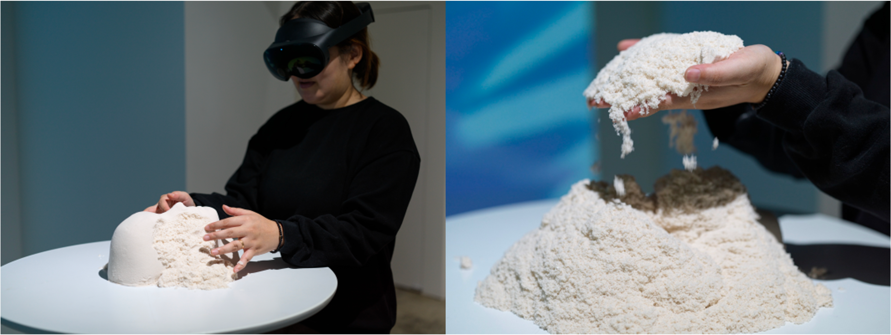

개발기간: 2023.01.01 ~ 2023.10.10
개발환경: Unity/GitHub/Blender3D
주요 역할: 기획 및 3D 모델링 제작, Unity script 상호작용 개발, Shader 물 개발, 가상환경 구성
기여도: 1인 프로젝트(100%)
제작동기: 본 작업은 HMD 기반의 가상현실 시스템과 OpenCV를 활용한 디지털 미러 기술을 결합하여, 관람객의 얼굴을 다른 시선으로 인식하게 만드는 상호작용적 구조를 제시한다. 자신의 얼굴이 왜곡되거나 전환되는 순간, 관람자는 ‘나’라는 존재에 대해 다시 사유하게 되며, 이는 자기 탐구를 유도하는 예술적 장치로 기능한다.
VR Hand Tracking 기술을 적용하여 컨트롤러 없이도 손의 움직임만으로 가상 오브젝트와의 자연스러운 상호작용이 가능하도록 구성했다. 가상과 현실의 오브제가 동일한 맥락에서 반응하며 동시에 작동하는 구조는 관람자에게 보다 직관적이고 몰입감 있는 경험을 제공한다.
작품은 인간 존재를 인식하는 가장 직접적인 매개인 ‘얼굴’을 현실과 가상 공간 모두에 배치함으로써, 물리적 세계와 디지털 세계 사이의 감각적 경계를 허문다. 이러한 이중적 배치는 관람객에게 ‘나’라는 존재를 어떻게 바라보고 있는지를 다시 묻는 트리거로 작동하며, 존재 인식과 자아 정체성에 대한 깊은 사유의 기회를 제공한다.

